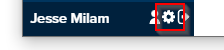
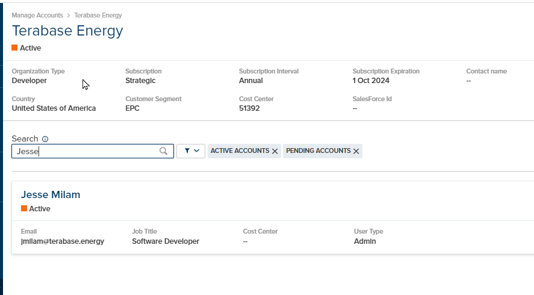
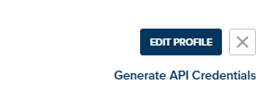
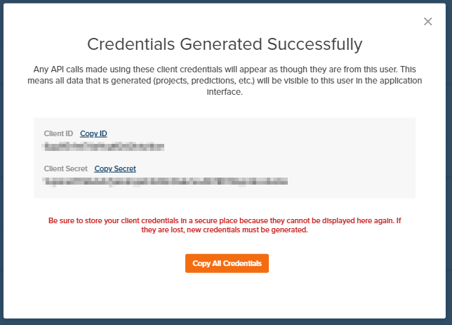

API Authentication
PlantPredict uses the Amazon Cognito & OAuth 2.0 API for administering and managing access tokens. If you are a first time user of the PlantPredict API, you need a set of client credentials (client ID, and client secret).
Step 1: Generate/receive client credentials.
"I have never used PlantPredict and need an account".
Simply navigate to https://ui.plantpredict.com/signUp, provide the necessary information and complete your account registration.
"I have a PlantPredict account and am the company administrator."
If you are the only person with a PlantPredict account in your organization/company, or the first person to have an account, you are likely the company admin. If you are a company admin, you will have a gear icon next to your name on the very bottom-left of the page when you log in on a web browser.
Click the gear icon. On the next page, search for the name of the person you would like to generate client credentials for, and click on their name.
Click on "Generate API Credentials" on the top right of the next page.
Copy each credential to your clipboard to be stored securely (step 2).
{kind=link}
"I have a PlantPredict account but am not the company administrator."
Contact the person in your organization who is the company admin, and provide to them a link to this page.
Step 2: Store your API credentials securely.
Step 3: Authenticate and receive a token.
At the beginning of any script/Python session, execute the following code to authenticate with the PlantPredict servers
to generate an access token, which is stored on an Api object.
import plantpredict
api = plantpredict.Api(
client_id="INSERT CLIENT_ID FROM API CREDENTIALS",
client_secret="INSERT CLIENT_SECRET FROM API CREDENTIALS"
)
The Api object is then used to instantiate other PlantPredict entities (see
Example Usage).
Warning
The access token will expire after 1 hour. If your script requires more than one hour to complete, the SDK will automatically generate a new token using a refresh token.